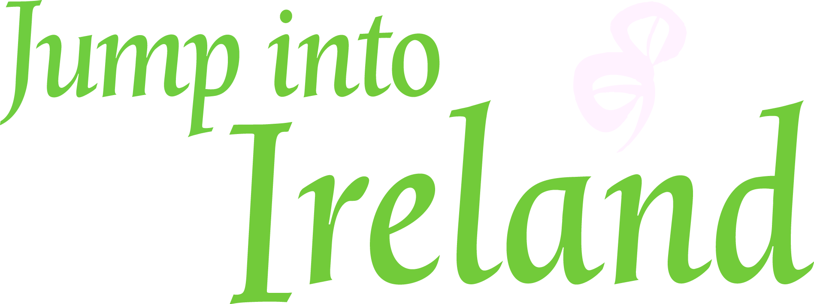

Tourism Ireland is responsible for marketing the island of Ireland overseas as a leading holiday destination. It was established as one of the “six areas of co-operation” under the framework of the Belfast Agreement of Good Friday 1998. Our remit is to increase tourism to the island of Ireland and to support Northern Ireland to realise its tourism potential. We operate under the auspices of the North/South Ministerial Council through the Department for the Economy in Northern Ireland and the Department of Transport, Tourism and Sport in Ireland. We work closely with the two tourist boards on the island, Fáilte Ireland and Tourism NI, and with our partners in the tourism industry at home and abroad in delivering on our remit. Tourism Ireland’s up to 150 staff create world-class marketing programmes in 21 markets across the world as well as centrally in Dublin and Coleraine. Tourism is one of our most important sectors. In 2019, we welcomed almost 11.2 million overseas visitors to the island of Ireland, who spent €5.8/£5.1 billion while here. All of this helped to sustain 325,000 vital jobs in communities across the island in 2019, helping to make Tourism one of the island’s largest indigenous industries. Tourism Ireland is a Company Limited by Guarantee without a Share Capital, Registered in No.336370, Bishop’s Square, Redmond’s Hill, Dublin.